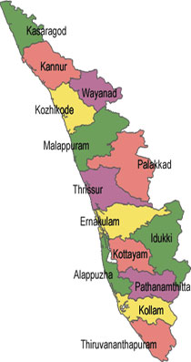

LET'S HAVE A LOOK AT THE TOUR MAP
BACK

WHERE TO VISIT , WHAT TO SEE?
SOME HOT PICKS(#HAVE_TO_VISIT)
- ALLEPPEY - THE BACKWATER HOT SPOT
- MUNNAR - PERFECT FOR A ROMANTIC HONEYMOON
- KUMARAKOM - ONE OF THE MOST TRANQUIL PLACES
- WAYANAD - THE LAND OF HEAVENLY TRAILS
- THEKKADY - FOR THE LOVE OF WILDLIFE
- KOVALAM - FOR SOME BEACH FUN
- VAGAMON - SOLITUDE GUARANTEED
- BEKAL - NOTHING LESS THAN HEAVEN ON EARTH
- KOZHIKODE - FOR AUTHENTIC MALABAR CUISINE
- VARKALA - ONE OF KERALA'S MOST SCENIC SEASIDE
- KANNUR - THE PICTURE PERFECT COASTAL TOWN
- KASARGOD - A COASTAL PARADISE IN KERALA
- KIZHUNNA BEACH - FOR COMPLETE SOLACE
- IDUKKI - THE TRUE GEM OF KERALA
- MUNROE ISLAND - FOR AN EXCITING CANAL CRUISE
- KAVVAYI BACKWATERS - THE STUNNING BACKWATER LANDSCAPE
- KUTTANAD - RICE BOWL OF KERALA
- THRISSUR - RICH CULTURAL HERITAGE
- PALAKKAD - A NATURE'S DELIGHT
- MALLAPURAM - VEDIC LEARNING AND ISLAMIC PHILOSOPHY LEARNING
- POOVAR - THE TROPICAL STAY PARADISE
- PONMUDI - THE GOLDEN PEAK
- GURUVAYUR - SPIRITUAL SPOT
- COCHIN - MAJOR PORT CITY
- MALAMPUZHA - INDIA'S SPICE CAPITAL
- NELLIAMPATHY - GOD'S OWN VILLAGE
- THIRUVANANTHAPURAM
- SABARIMALLA
- KOLLAM - TREASURE OF NATURAL MARVELS
- NILAMBUR - LAND OF TEAK PLANTATION
- THENMALA - PLANNED ECOTOURISM
SOME_OTHER_ATTRACTIONS
- ASTHAMUDI - NATURAL BEAUTY
- MARARI - GORGEOUS BEACH
- THALASSERY - COASTAL TOWN
- KALPETTA - QUAINT LITTLE TOWN
- PEERUMEDU
- MANNARKKAD -SILENT VALEY
- KOTTAYAM
- DEVIKULAM - LAKE WITH A LEGEND
- THOLPETTY - WILDLIFE